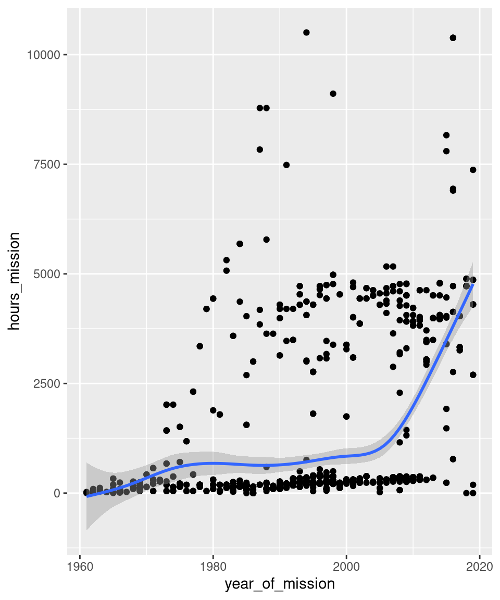
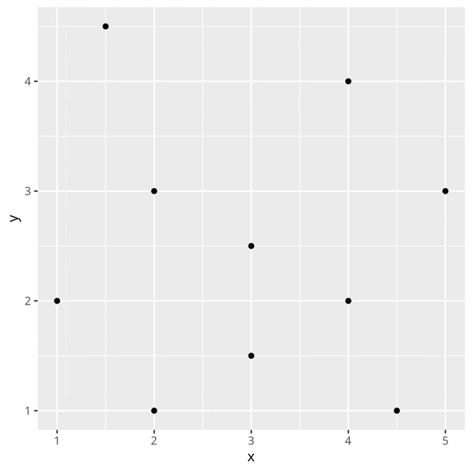
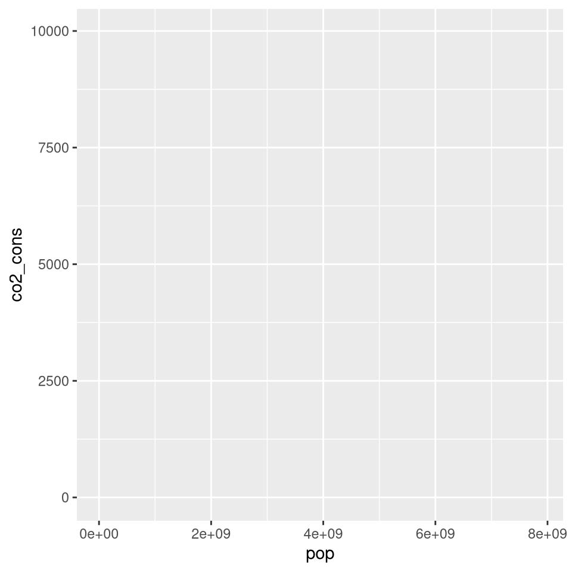
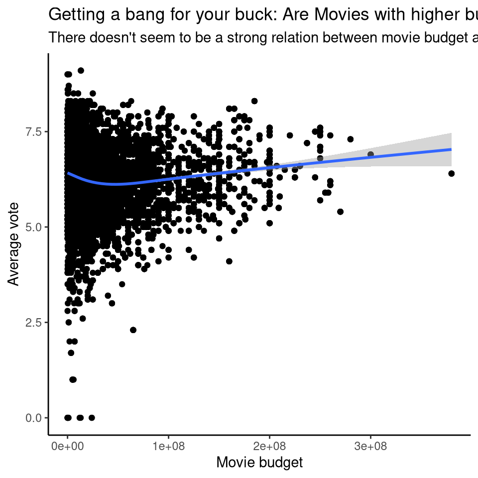
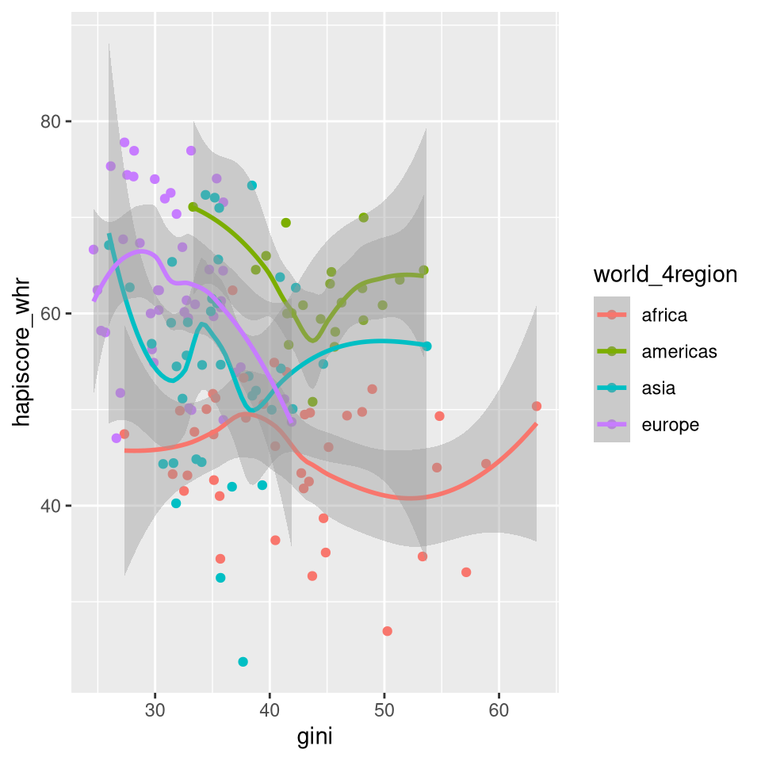
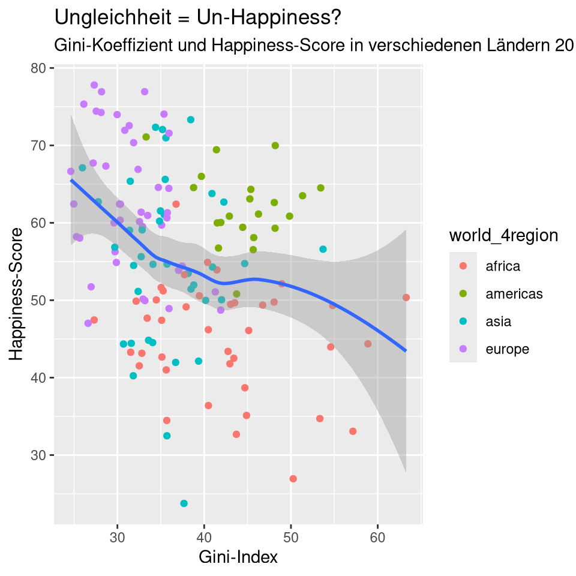
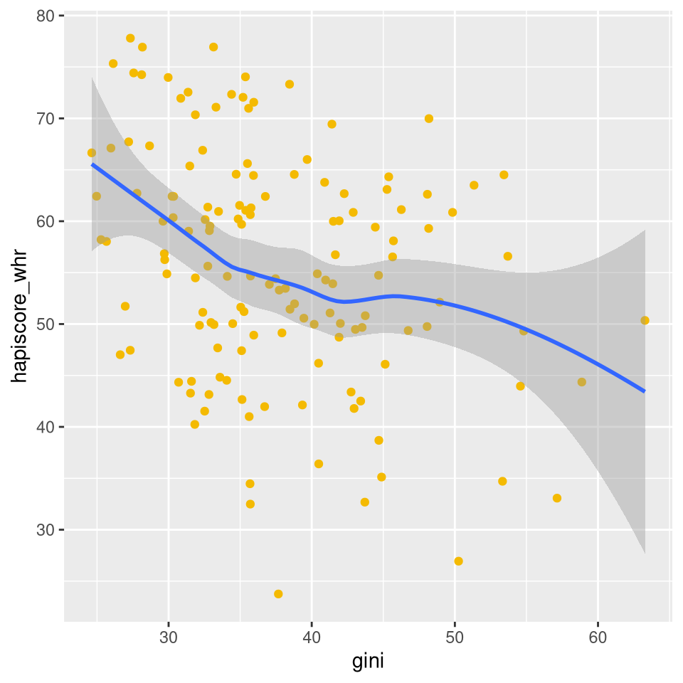

ggplot2: Basics
Bild von Allison Horst.
ggplot2: Das Paket
… kann aber natürlich auch seperat geladen werden:
Erste Schritte.
Foto von Omar Lopez auf Unsplash
Komponenten
Daten
x y group size shape
1 1 2.0 A 4 circle
2 2 3.0 A 5 circle
3 3 2.5 A 6 circle
4 4 4.0 A 7 circle
5 5 3.0 A 8 circle
6 2 1.0 B 3 circleAestetic mapping

Layers

Die Daten
Wir nutzen Daten von Gapminder.
Gapminder sammelt diverse Indikatoren aus allen Ländern weltweit, z.B. Lebenserwartung, GDP, CO2-Verbrauch und viele mehr.
Die Daten
Zuerst schauen wir uns nur eins der Jahre genauer an:
Gini-Koeffizient
- 0 = perfekte Gleichheit (alle haben gleich viel)
- 100 = perfekte Ungleichheit (eine Person hat alles)
Happiness-Score (Cantril-Leiter)
- 0 = Schlechtestest mögliche Leben.
- 100 = Bestmöglichstes Leben.
Start: ggplot()
ggplot()1. Daten
ggplot(data = gapminder_2019)
2. Aesthetic mapping
| Argument | Aesthetic |
|---|---|
x |
x-Achse |
y |
y-Achse |
color |
Farbe |
fill |
Füllfarbe |
shape |
Form |
size |
Größe |
alpha |
Transparenz |
group |
Gruppe |
Umfangreicherer Überblick über mögliche Aestethics.
Aesthetic mapping: Achsen
3. Geometric Layers
| Argument | Aesthetic |
|---|---|
geom_point() |
Punkte |
geom_line() |
Linien |
geom_histogram() |
Histogramm |
geom_text() |
Text |
geom_boxplot() |
Boxplot |
Umfangreicherer Überblick über mögliche Geoms.
Layers: Punkte
Das reicht schon, um einen eigenen ersten Plot zu erstellen. Nutzt die gapminder_2019 Daten und erstellt einen Scatterplot, der den Zusammenhang zwischen Happiness-Score (hapiscore_whr) und GDP pro Kopf (gdp_pcap) zeigt. Gibt es einen Zusammenhang?
ggplot(
data = gapminder_2019,
mapping = aes(
x = gdp_pcap,
y = hapiscore_whr
)
) +
geom_point()
Länder mit höherem pro-Kopf Einkommen haben tendenziell auch einen höheren Happiness-Score.
Mehr Aesthetics!
Mehr Layers!
Probiert aus, wo in den ggplot-layers man die Farbe ändern kann (es gibt 3 verschiedene Möglichkeiten, die sich alle unterschiedlich auf den Plot auswirken).
Ändert dafür unseren bisherigen Plot so, dass nur die Punkte farbig sind.
Die Linie von geom_smooth() soll einfarbig werden.
ggplot(
data = gapminder_2019,
mapping = aes(x = gini, y = hapiscore_whr, color = world_4region)
) +
geom_point() +
geom_smooth()
Wir ändern dafür die Aesthetics von global zu lokal, indem wir die color-Aesthetic nur in geom_point() definieren.
Aestetics als Mapping oder Setting
Für alle Layer
Für spezifische Layer

Labels
ggplot(
data = gapminder_2019,
mapping = aes(
x = gini,
y = hapiscore_whr
)
) +
geom_point(aes(color = world_4region)) +
geom_smooth() +
labs(
title = "Ungleichheit = Un-Happiness?",
subtitle = "Gini-Koeffizient und Happiness-Score in verschiedenen Ländern 2019",
x = "Gini-Index",
y = "Happiness-Score",
)
Style deinen Plot: Themes
ggplot(
data = gapminder_2019,
mapping = aes(
x = gini,
y = hapiscore_whr
)
) +
geom_point(aes(color = world_4region)) +
geom_smooth() +
labs(
title = "Ungleichheit = Un-Happiness?",
subtitle = "Gini-Koeffizient und Happiness-Score in verschiedenen Ländern 2019",
x = "Gini-Index",
y = "Happiness-Score",
) +
theme_bw()
Eine Übersicht über Themes findet sich hier.
Das waren schon die Basics. Von hier aus haben wir einen guten Anfangspunkt, um die Welt der Grafiken ausführlicher zu erkunden. Aber erst einmal, Pause.
- Foto von Casey Allen auf Unsplash